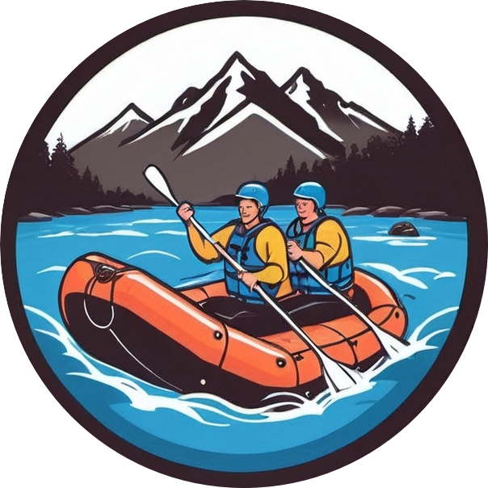

Overview
Purpose
The purpose of our rafting business's online presence is to connect adventure enthusiasts with exhilarating and safe rafting experiences amidst breathtaking natural landscapes. Through our website, we aim to inform potential customers about the diverse rafting trips we offer, ranging from family-friendly floats to thrilling whitewater adventures. By showcasing our expertise, safety protocols, and the stunning environments where we operate, we strive to inspire trust and excitement, ultimately encouraging visitors to book their next unforgettable rafting adventure with us.
Audience
Our water rafting website is designed to appeal primarily to adventure enthusiasts seeking thrilling outdoor experiences in natural settings. Our target audience includes individuals, families, and groups who are physically active, enjoy nature, and are looking for memorable adventures on the water. Whether they are beginners looking for a new hobby or experienced rafters seeking challenging rapids, our website aims to provide comprehensive information and inspire confidence in choosing us for their rafting adventures. Scenario Questions: Scenario Question 1: "I've never tried rafting before and I'm concerned about safety. How can your website reassure me?" Answer: Our website features detailed information about our safety protocols, including certifications, experienced guides, and state-of-the-art equipment. Customer testimonials and safety ratings are also prominently displayed to demonstrate our commitment to providing a safe and enjoyable rafting experience for all participants. Scenario Question 2: "I'm planning a family vacation and considering rafting as an activity. What options does your website offer for families?" Answer: Families are a significant focus for us. Our website outlines family-friendly rafting trips tailored to accommodate children and adults of all skill levels. We highlight calm and scenic routes suitable for beginners and younger participants, ensuring a fun and safe experience for the whole family. Scenario Question 3: "I'm an experienced rafter looking for challenging whitewater. How does your website cater to advanced rafters like me?" Answer: For experienced rafters seeking adrenaline-pumping adventures, our website details advanced whitewater routes and expeditions. We provide descriptions of the rapids' classifications, difficulty levels, and the skills required. Information about our expert guides and testimonials from seasoned rafters further emphasize our ability to deliver thrilling and technically demanding rafting experiences. By addressing these scenarios on our website, we aim to engage our target audience effectively, providing the information and reassurance they need to choose our rafting company for their next adventure.
Branding
Website Logo
Style Guide
Color Palette
- primary-color: #33222A
- secondary-color: #253C78
- accent1-color: #EFB53B
- accent2-color: #FFEECF
- Palette URL: https://coolors.co/33222a-253c78-efb53b-ffeecf
Typography
- Font Family: Playwrite NG Modern
- Font Style: Normal
Headings Example Font
Normal Text/Paragraph Example Font
Example Text: Lorem, ipsum.
Colored Callout Example Font
Example Text: Lorem, ipsum.
Navigation
Wireframes
Home Page Wireframe

About Us Page Wireframe